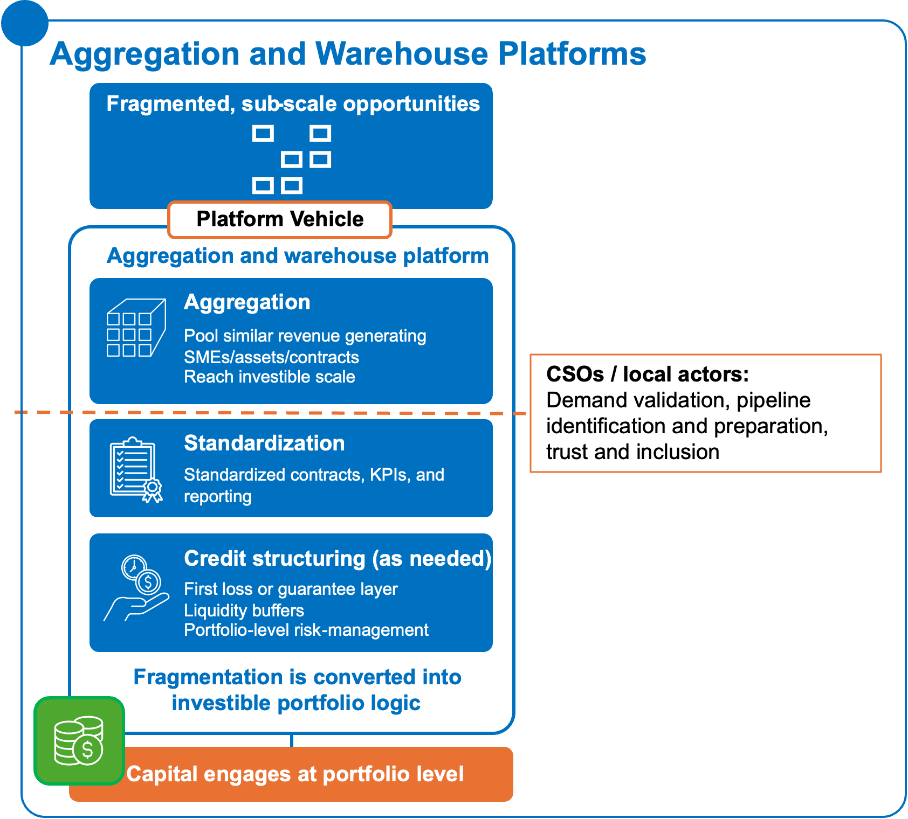
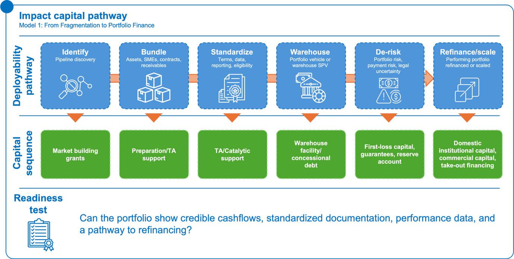
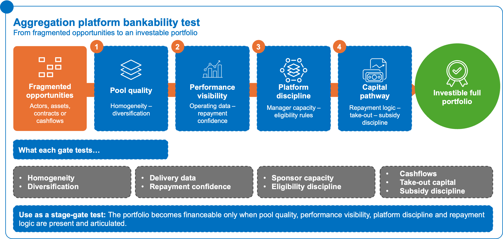
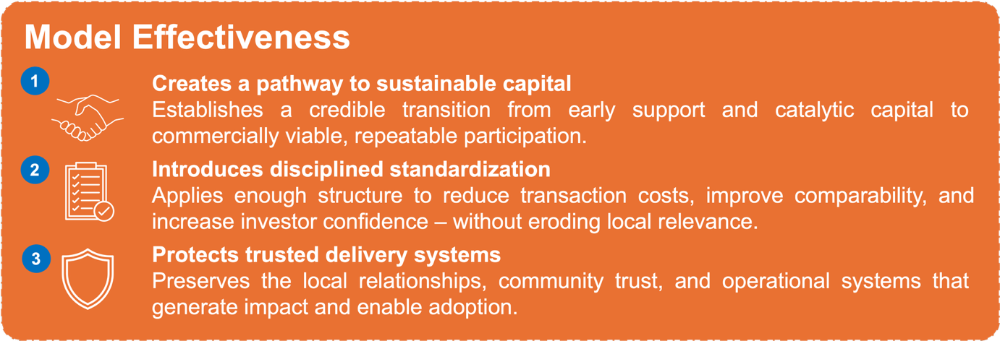
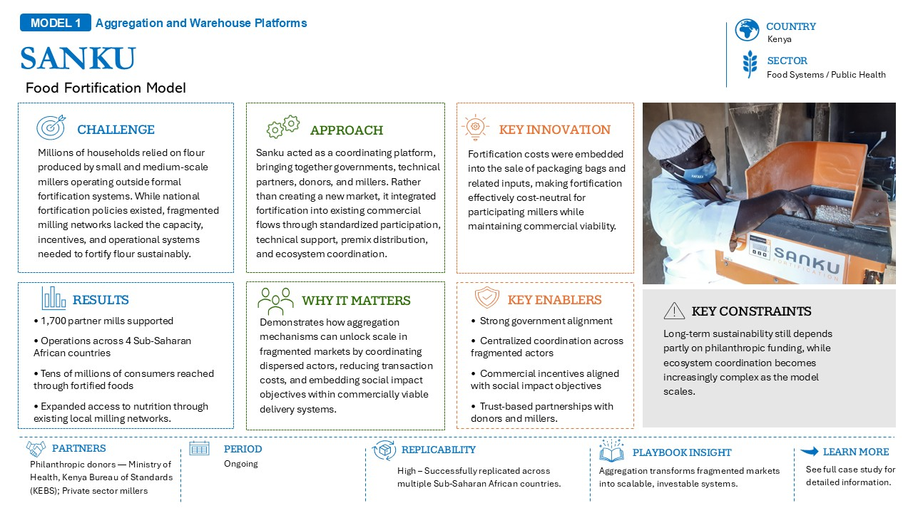
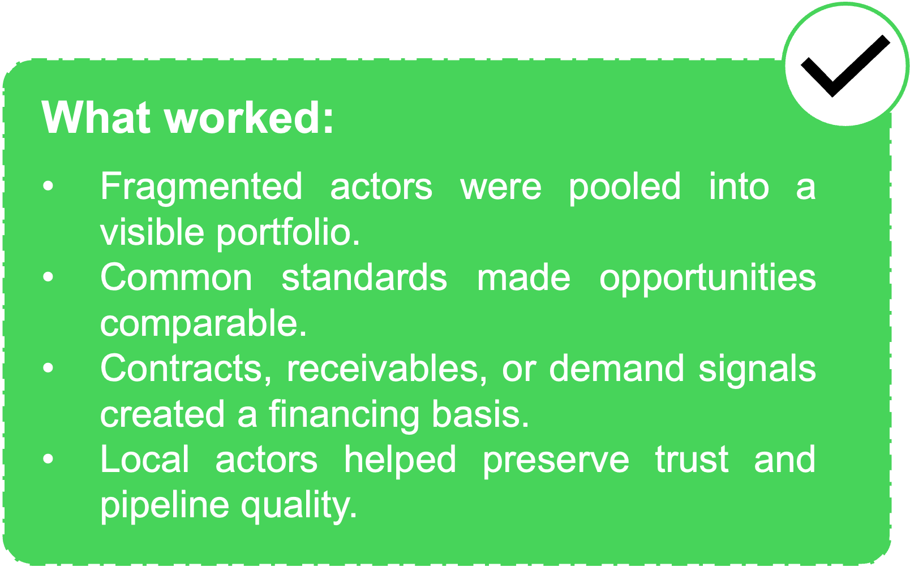

8.1 What problem the model solves

Figure 15: From fragmentation to flow: pooling, standardizing, and structuring risk to turn small deals into investable portfolios.Figure 15: From fragmentation to flow: pooling, standardizing, and structuring risk to turn small deals into investable portfolios.Aggregation and warehouse platforms address situations where promising opportunities exist, but remain too fragmented, small, or inconsistent for investors and larger partners to assess efficiently.
In many markets, social-impact and development activities are already generating value through local enterprises, CSOs, SMEs, service providers, cooperatives, clinics, distributors, or community-facing actors. The challenge is that these opportunities often remain dispersed across many small actors, locations, contracts, or delivery systems. Individually, they may be too costly to diligence, too small to finance, or too variable to scale. Collectively, however, they may represent a credible and investable market.
This model creates a pathway from fragmented activity to structured portfolio logic. It pools smaller opportunities into a common platform or vehicle, applies shared eligibility criteria and standard terms, and creates enough visibility, consistency, and scale for capital to engage.
The purpose is not to replace local delivery systems or erase their diversity. It is to make existing activity more legible, comparable, and financeable without losing the trust, relationships, and delivery capacity that made the activity valuable in the first place.
8.2 Where it applies
Aggregation and warehouse platforms are most relevant where there are many similar or adjacent opportunities that are individually sub-scale but collectively meaningful. The model works best where there is enough commonality across actors, assets, contracts, or cash flows to allow standardization without undermining local delivery realities.
Food and agriculture
This model can apply to processors, aggregators, irrigation providers, cold chain operators, storage assets, logistics providers, input distributors, and other value-chain actors that sit between producers and final buyers.
These markets often depend on a shared understanding of production volumes, quality expectations, delivery timing, and performance across multiple actors. When these elements are visible enough to coordinate, smaller enterprises and assets can be grouped into structures that are easier for buyers, lenders, and investors to engage.
Aggregation can help convert scattered value-chain activity into a more coherent platform for finance, offtake, infrastructure use, and market access.
Energy
This model can apply to mini-grids, PAYGo receivables, solar irrigation assets, clean cooking providers, distributed energy systems, and other decentralized energy models.
Distributed energy markets often involve many small customers, assets, payments, and service points. Individually, these may appear too fragmented for institutional capital. However, where usage patterns, service reliability, customer payment behavior, and asset performance are sufficiently understood, these activities can be pooled into more financeable portfolios.
Aggregation allows capital to engage with the performance of a portfolio rather than underwriting every asset or customer relationship separately.
Health
This model can apply to clinics, pharmacies, diagnostic providers, provider networks, equipment-finance portfolios, and other distributed health delivery assets.
Health markets often include many smaller providers that serve real demand but lack the scale, documentation, or payment history needed to attract finance individually. Where there is confidence in service utilization, provider performance, quality standards, and payment continuity, these providers can be grouped into financing or service platforms.
Aggregation can help transform fragmented provider capacity into a more structured network that supports reimbursement, quality assurance, working capital, equipment finance, and service expansion.
8.3 Transaction mechanics
Aggregation and warehouse platforms work by creating a common structure through which smaller opportunities can be assessed, financed, and managed as a portfolio.
Typical transaction mechanics include:
- Eligibility criteria that define which SMEs, assets, contracts, providers, or receivables can enter the platform;
- Standardized contracts and documentation to reduce transaction costs and make opportunities comparable;
- A warehouse vehicle or portfolio structure that temporarily holds, finances, or organizes the underlying assets or cash flows;
- Pooled cash flows or portfolio-level repayment logic that allows lenders and investors to assess performance at scale;
- First-loss or catalytic capital to absorb early risk and create confidence for more commercial layers of capital;
- Senior debt or institutional capital that enters once the portfolio has sufficient structure, scale, and performance confidence;
- Operational and performance tracking to support reporting, accountability, and portfolio management;
- Take-out financing or refinancing pathways that allow the portfolio to move from early warehousing into longer-term capital once performance is established.
The model depends on a balance between standardization and flexibility. Too little standardization leaves capital facing the same fragmentation as before. Too much standardization may exclude the smaller or community-rooted actors the platform is meant to support.8.4 Impact Capital Pathway: From Fragmentation to Portfolio Finance
Aggregation models require capital to move in stages as fragmented opportunities become more structured, standardized, and financeable. Early grant and preparation support help identify and organize the pipeline. Technical assistance and catalytic support help develop common eligibility rules, documentation, and reporting systems. Warehouse finance supports pooled assets, receivables, SMEs, contracts, or cash flows while performance data is built.
First-loss capital, guarantees, or reserve accounts may then be used to address specific portfolio, payment, or legal risks. Domestic and commercial capital become appropriate once repayment logic, reporting, performance history, and take-out pathways are credible.

Key indicators to track include:
- number of assets, SMEs, contracts, or receivables aggregated;
- percentage of underlying opportunities meeting eligibility criteria;
- portfolio repayment or performance rate;
- time required to finance the aggregated portfolio compared with individual transactions;
- level of domestic capital participation;
- reduction in transaction costs;
- take-out financing or refinancing achieved.
Risks to test include:
For detailed examples of aggregation models in practice, see the Case Study Compendium.
8.5 CSO and institutional actor lens
CSO role
CSOs and community-facing organizations can play a significant role in making aggregation models more legitimate, inclusive, and grounded in delivery reality.
They can help:
- validate demand and user needs across communities or delivery points;
- identify credible local actors, SMEs, providers, or cooperatives;
- strengthen trust between formal finance, aggregators, and local delivery actors;
- support adoption, feedback, and accountability mechanisms;
- ensure inclusion of smaller or underserved actors that may otherwise be excluded by formal eligibility requirements;
- surface operational constraints that may affect delivery, repayment, quality, or uptake;
- protect the social-impact objectives that justify aggregation in the first place.
In this model, CSOs do not need to become financiers or portfolio managers. Their value lies in helping ensure that aggregation is not only efficient, but also legitimate, inclusive, and connected to real demand.
Institutional actor role
Institutional actors should clarify whether they are best positioned to fund, convene, de-risk, aggregate, or support the pathway or platform.
Their role may include:
- funding early platform design or market preparation;
- convening fragmented actors around a common structure;
- providing first-loss capital or guarantees;
- supporting standardization of documentation, eligibility rules, or reporting;
- helping build confidence among lenders, investors, buyers, or public actors;
- strengthening the systems needed for coordination, payment, and performance monitoring;
- deciding whether aggregation fits the institution’s broader strategic role in the market.
8.6 Bankability test and failure modes
Aggregation and warehouse platforms are only useful where aggregation creates genuine portfolio value. Pooling weak or unrelated opportunities does not automatically make them investable.
Before using this model, users should assess whether the underlying opportunities are sufficiently similar, visible, and reliable to support portfolio logic.
Bankability test
Key questions include:
- Homogeneity: Are the underlying actors, assets, contracts, or cash flows similar enough to be pooled?
- Performance confidence: Is there enough visibility into how the underlying opportunities operate, deliver, and repay?
- Sponsor or platform capacity: Is there a credible actor able to manage the warehouse, enforce standards, and coordinate participants?
- Repayment logic: Are there identifiable cash flows, receivables, contracts, or payment mechanisms that can support financing?
- Portfolio diversification: Does the pool reduce risk through scale and diversification, or simply concentrate similar weaknesses?
- Eligibility discipline: Are entry rules clear enough to maintain quality without excluding the actors the model is meant to support?
- Path to take-out capital: Is there a realistic route from early warehousing to longer-term refinancing or institutional participation?
- Figure 16: Stage-gating bankability: proving the portfolio at each step – from pool quality to capital pathway.Figure 16: Stage-gating bankability: proving the portfolio at each step – from pool quality to capital pathway.Subsidy discipline: Is catalytic or concessional capital reducing specific risks, or masking weak unit economics?

Common failure modes
| Failure condition | What it means in practice |
|---|---|
| Heterogeneity of underlying opportunities | Assets or enterprises are too different in size, risk profile, or business model to be standardized into a coherent portfolio. |
| Unclear revenue logic | Opportunities are pooled before a clear payer, revenue stream, or repayment pathway is established. |
| Weak platform management | No credible manager or coordinating entity to structure, govern, and operate the platform effectively. |
| Misuse of catalytic capital | First-loss or concessional capital is deployed without a clear pathway to crowd in commercial investors. |
| Weak reporting and data visibility | Investors cannot assess performance due to poor data, inconsistent reporting, or lack of transparency. |
| Exclusion through eligibility rules | Standardization or eligibility criteria unintentionally exclude smaller, informal, or community-rooted actors. |
| Subsidy dependence | The platform relies on ongoing subsidies without improving underlying unit economics or viability. |
| Assumed take-out financing | Refinancing or exit through commercial capital is expected but not structured or secured in advance. |
| Administrative layering | The platform adds complexity or bureaucracy rather than improving scale, efficiency, or access to capital. |
Closing logic
Aggregation is not coordination for its own sake. It is useful when it turns many smaller, dispersed, or informal opportunities into a structured portfolio that can be understood, financed, and scaled.

For CSOs and development actors, the model offers a way to preserve the value of local delivery, trust, and social-impact activity while creating a bridge toward broader participation. For institutional actors and investors, it creates a pathway to engage with markets that are too fragmented to finance one actor at a time.
8.7 Illustrative case
In food systems and agricultural markets, aggregation models have increasingly emerged as mechanisms for organizing fragmented producers, delivery actors, and value-chain relationships into more coordinated and financeable structures. By creating shared operational systems, standardized participation mechanisms, and portfolio visibility across dispersed actors, these models help transform fragmented local activity into scalable delivery ecosystems capable of attracting longer-term institutional and commercial participation.


Sanku’s food fortification model in Kenya shows how aggregation can turn a fragmented market into a scalable delivery system. By coordinating governments, technical partners, donors, and small- and medium-scale millers, Sanku embedded fortification into existing milling operations rather than creating a parallel market. The model reduced participation costs through packaging-related revenue, aligned commercial incentives with nutrition outcomes, and reached millions of consumers through trusted local milling networks. Its success depended on government alignment, ecosystem coordination, and partnerships with donors and millers, while long-term sustainability remains linked to philanthropic support and the growing complexity of coordination as the model scales.